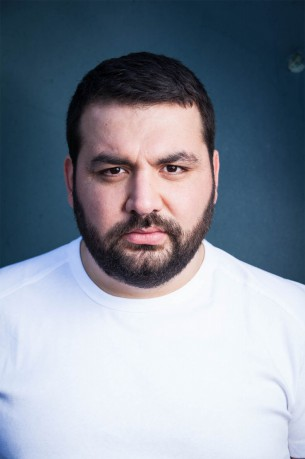
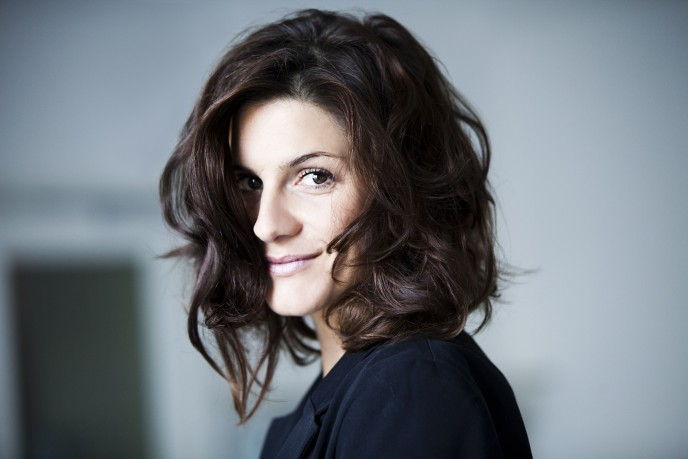
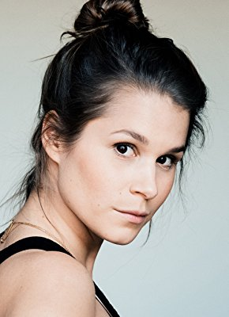
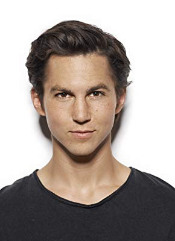
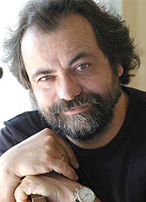

IMDB-Wertung: 8.1 / 10
IMDB-Wertung: 8.1 / 10  Metascore: 0
Metascore: 0 
Das Leben von Leo, Jonas, Emma, Alex, Toni und Hugo unterscheidet sich grundlegend von dem ihrer Altersgenossen. Während andere Teenager in die Schule gehen oder Freunde treffen, müssen sie eine lange Zeit im Krankenhaus verbringen. Ihre Krankheiten sind unterschiedlich, doch sind sie verbunden durch den Versuch in dieser Situation eine so normale Jugend wie möglich zu haben. Dazu gehören nächtliche Streifzüge durchs Krankenhaus genauso wie die erste große Liebe.Adaption der kanadischen Serie "Polseres vermelles".
Jahr: 2015
Dauer: 46 Minuten
FSK:
Land: Deutschland Studio: VoxTonspuren:
Untertitel:
Auflösung: 720p (1280x720) Größe: 958 MB
Genre: Drama, TV-Serie
Regisseur: Sabine Bernardi, Felix Binder, Richard Huber, Andreas Menck
Drehbuch: Jerzy Skolimowski
Soundtrack:
Darsteller:
- Luise Befort als Emma 30 episodes, 2015-2017
- Timur Bartels als Alex 30 episodes, 2015-2017
- Nick Julius Schuck als Hugo 30 episodes, 2015-2017
-  Sahin Eryilmaz als Dietz 15 episodes, 2015-2016
- Andreas Guenther als Matthias Breidtbach 7 episodes, 2015
- Dieter Schaad als Karl Vogel 6 episodes, 2015-2016
- Lucas Reiber als Victor 4 episodes, 2016
- Mercedes Müller als Laura 2 episodes, 2016
- Funda Rosenland als Krankenschwester 2 episodes, 2015
-  Christina Hecke als Frau Wieland 1 episode, 2016
- Dirk Martens als Herr Vandenberg 1 episode, 2016
- Jakob Philipp Graf als Pablo 1 episode, 2016
-  Cristina do Rego als Christina 1 episode, 2016
- Jörg Reichlin als Patient 1 episode, 2015
- Peter Eberst als Benjamin 1 episode, 2017
- Dennis Vehlen als Pfleger Paul 1 episode, 2017
-  Tim Oliver Schultz als Leo Roland 30 episodes, 2015-2017
- Damian Hardung als Jonas 30 episodes, 2015-2017
- Ivo Kortlang als Toni 30 episodes, 2015-2017
-  Matthias Brenner als Benito 13 episodes, 2015-2016
- Julia Grafflage als Chefärztin Dr. Reusch 12 episodes, 2015-2016
- Stephanie Kämmer als Sabine Krüger 11 episodes, 2015-2016
- Alexandra Schalaudek als Anne Neumann 10 episodes, 2015-2016
- Jonas Baeck als Dr. Hein 10 episodes, 2015-2016
- Rolf Berg als Rudi 9 episodes, 2015-2016
- Julie Stark als Tabea Roland 8 episodes, 2015-2016
- Anna von Haebler als Charlotte Breidtbach 7 episodes, 2015
- Nele Schepe als Kim 6 episodes, 2016
- Jens Kipper als Sebastian Neumann 6 episodes, 2015-2016
- Julia Doege als Dr. Gustl 5 episodes, 2015-2016
- Alice Gruia als Christine Wolfshagen 5 episodes, 2015-2016
- Dominik Buch als Ruben 4 episodes, 2015-2016
- Rouven David Israel als Marvin 4 episodes, 2015
- Julia Jendroßek als Olga 3 episodes, 2015-2016
- Luna Maxeiner als Sara Winter 3 episodes, 2016
- Folker Banik als Dr. Wendtland 3 episodes, 2015
- Tanja Haller als Patrizia 3 episodes, 2015
- Phillis Dayanir als Silke 2 episodes, 2015
- Dirk Ossig als Herr Kramer 2 episodes, 2015
- Jonatan Jakobsson als Luis Wieland 2 episodes, 2016
- Max Jacoby als Finn Kruse 2 episodes, 2016
- Fleur Julie MacLaine als Sussi Lilienthal 2 episodes, 2016
- Thomas Schmuckert als Dr. Heiko Bodde 2 episodes, 2016
- Larissa Breidbach als Svenja 2 episodes, 2015-2016
- Rainer Laupichler als Dr. Seckendorff 2 episodes, 2015-2016
- Nele Kiper als Krankenschwester 2 episodes, 2015
- Christian Skibinski als Patient 2 episodes, 2015
- Edon Rexhepi als Luke 1 episode, 2015
- Nicole Heesters als Marie Faber 1 episode, 2016
- Jürgen Rißmann als Rafael 1 episode, 2016
Datei: X:\HD-Serien\Club der roten Bänder\S01\Club der roten Bänder S01E01 Das Schwimmbad.mkv seit 07.02.2018
Festplatte: HD Serien(A-H)
 Es gibt insgesamt 182 Filme in der Gruppe 'HD-Serien'
Es gibt insgesamt 182 Filme in der Gruppe 'HD-Serien'